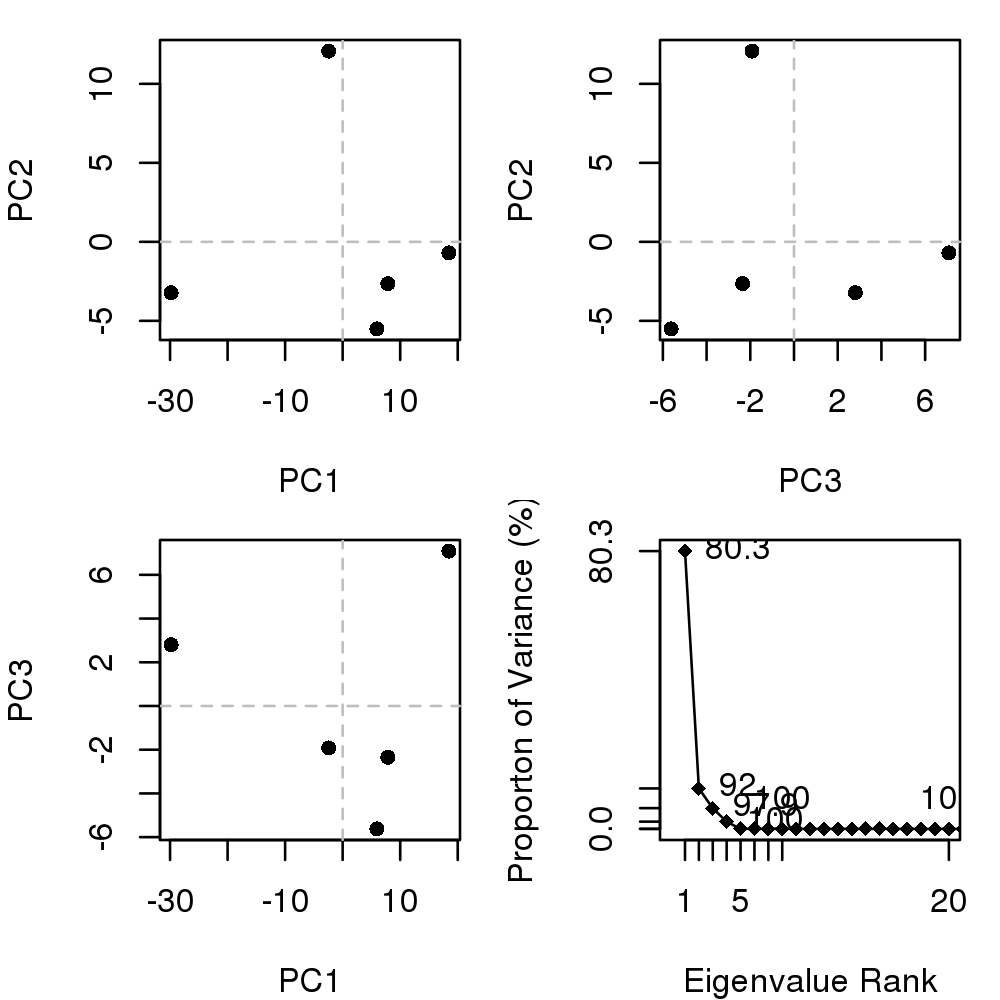

Biological Structure Analysis
### ### Example of PCA on a collection of PKA structures ### and a large collection of transducin structure ### ### Authors Xin-Qiu Yao ### Lars Skjaerven ### Barry J Grant ### require(bio3d); require(graphics); pause <- function() { cat("Press ENTER/RETURN/NEWLINE to continue.") readLines(n=1) invisible() } ################################################ ## # ## Basic PCA of related X-ray structures # ## (requires the 'muscle' program installed) # ## # ################################################ pause()Press ENTER/RETURN/NEWLINE to continue.### Set temp dir to store PDB files tmp.dir <- tempdir() ## Specify PDB identifiers ids <- c("1cdk_A", "3agm_A", "1cmk_E", "3dnd_A", "1q8w_A") ## Download PDBs raw.files <- get.pdb(ids, path=tmp.dir)Warning message: ids should be standard 4 character PDB-IDs: trying first 4 characters...pause()Press ENTER/RETURN/NEWLINE to continue.## Split PDBs by chain ID files <- pdbsplit(raw.files, ids, path=tmp.dir)| | | 0% | |============== | 20% | |============================ | 40% | |========================================== | 60% | |======================================================== | 80% | |======================================================================| 100%pause()Press ENTER/RETURN/NEWLINE to continue.## Sequence/structure alignment pdbs <- pdbaln(files)Reading PDB files: /tmp/Rtmpbw2kkP/1cdk_A.pdb /tmp/Rtmpbw2kkP/3agm_A.pdb /tmp/Rtmpbw2kkP/1cmk_E.pdb /tmp/Rtmpbw2kkP/3dnd_A.pdb /tmp/Rtmpbw2kkP/1q8w_A.pdb ... PDB has ALT records, taking A only, rm.alt=TRUE .. Extracting sequences pdb/seq: 1 name: /tmp/Rtmpbw2kkP/1cdk_A.pdb pdb/seq: 2 name: /tmp/Rtmpbw2kkP/3agm_A.pdb pdb/seq: 3 name: /tmp/Rtmpbw2kkP/1cmk_E.pdb pdb/seq: 4 name: /tmp/Rtmpbw2kkP/3dnd_A.pdb PDB has ALT records, taking A only, rm.alt=TRUE pdb/seq: 5 name: /tmp/Rtmpbw2kkP/1q8w_A.pdbpause()Press ENTER/RETURN/NEWLINE to continue.## Find invariant core core <- core.find(pdbs)core size 332 of 333 vol = 23.486 core size 331 of 333 vol = 22.189 core size 330 of 333 vol = 21.26 core size 329 of 333 vol = 20.413 core size 328 of 333 vol = 19.493 core size 327 of 333 vol = 18.651 core size 326 of 333 vol = 17.99 core size 325 of 333 vol = 17.359 core size 324 of 333 vol = 16.751 core size 323 of 333 vol = 16.189 core size 322 of 333 vol = 15.63 core size 321 of 333 vol = 15.16 core size 320 of 333 vol = 14.626 core size 319 of 333 vol = 14.175 core size 318 of 333 vol = 13.853 core size 317 of 333 vol = 13.597 core size 316 of 333 vol = 13.312 core size 315 of 333 vol = 13.029 core size 314 of 333 vol = 12.74 core size 313 of 333 vol = 12.46 core size 312 of 333 vol = 12.222 core size 311 of 333 vol = 12.049 core size 310 of 333 vol = 11.824 core size 309 of 333 vol = 11.607 core size 308 of 333 vol = 11.444 core size 307 of 333 vol = 11.266 core size 306 of 333 vol = 11.112 core size 305 of 333 vol = 10.952 core size 304 of 333 vol = 10.699 core size 303 of 333 vol = 10.386 core size 302 of 333 vol = 10.164 core size 301 of 333 vol = 9.968 core size 300 of 333 vol = 9.812 core size 299 of 333 vol = 9.661 core size 298 of 333 vol = 9.496 core size 297 of 333 vol = 9.322 core size 296 of 333 vol = 9.108 core size 295 of 333 vol = 8.866 core size 294 of 333 vol = 8.658 core size 293 of 333 vol = 8.417 core size 292 of 333 vol = 8.18 core size 291 of 333 vol = 8.03 core size 290 of 333 vol = 7.855 core size 289 of 333 vol = 7.739 core size 288 of 333 vol = 7.625 core size 287 of 333 vol = 7.507 core size 286 of 333 vol = 7.325 core size 285 of 333 vol = 7.175 core size 284 of 333 vol = 7.01 core size 283 of 333 vol = 6.887 core size 282 of 333 vol = 6.776 core size 281 of 333 vol = 6.654 core size 280 of 333 vol = 6.519 core size 279 of 333 vol = 6.37 core size 278 of 333 vol = 6.22 core size 277 of 333 vol = 6.132 core size 276 of 333 vol = 6.051 core size 275 of 333 vol = 5.985 core size 274 of 333 vol = 5.918 core size 273 of 333 vol = 5.857 core size 272 of 333 vol = 5.754 core size 271 of 333 vol = 5.705 core size 270 of 333 vol = 5.629 core size 269 of 333 vol = 5.536 core size 268 of 333 vol = 5.454 core size 267 of 333 vol = 5.374 core size 266 of 333 vol = 5.31 core size 265 of 333 vol = 5.242 core size 264 of 333 vol = 5.156 core size 263 of 333 vol = 5.093 core size 262 of 333 vol = 5.025 core size 261 of 333 vol = 4.946 core size 260 of 333 vol = 4.852 core size 259 of 333 vol = 4.792 core size 258 of 333 vol = 4.7 core size 257 of 333 vol = 4.619 core size 256 of 333 vol = 4.556 core size 255 of 333 vol = 4.498 core size 254 of 333 vol = 4.447 core size 253 of 333 vol = 4.384 core size 252 of 333 vol = 4.328 core size 251 of 333 vol = 4.265 core size 250 of 333 vol = 4.192 core size 249 of 333 vol = 4.132 core size 248 of 333 vol = 4.046 core size 247 of 333 vol = 3.964 core size 246 of 333 vol = 3.891 core size 245 of 333 vol = 3.827 core size 244 of 333 vol = 3.76 core size 243 of 333 vol = 3.673 core size 242 of 333 vol = 3.576 core size 241 of 333 vol = 3.497 core size 240 of 333 vol = 3.43 core size 239 of 333 vol = 3.355 core size 238 of 333 vol = 3.277 core size 237 of 333 vol = 3.208 core size 236 of 333 vol = 3.105 core size 235 of 333 vol = 3.03 core size 234 of 333 vol = 2.93 core size 233 of 333 vol = 2.842 core size 232 of 333 vol = 2.752 core size 231 of 333 vol = 2.667 core size 230 of 333 vol = 2.579 core size 229 of 333 vol = 2.498 core size 228 of 333 vol = 2.419 core size 227 of 333 vol = 2.34 core size 226 of 333 vol = 2.271 core size 225 of 333 vol = 2.203 core size 224 of 333 vol = 2.117 core size 223 of 333 vol = 2.048 core size 222 of 333 vol = 1.983 core size 221 of 333 vol = 1.928 core size 220 of 333 vol = 1.872 core size 219 of 333 vol = 1.803 core size 218 of 333 vol = 1.738 core size 217 of 333 vol = 1.687 core size 216 of 333 vol = 1.639 core size 215 of 333 vol = 1.594 core size 214 of 333 vol = 1.539 core size 213 of 333 vol = 1.498 core size 212 of 333 vol = 1.457 core size 211 of 333 vol = 1.417 core size 210 of 333 vol = 1.383 core size 209 of 333 vol = 1.343 core size 208 of 333 vol = 1.311 core size 207 of 333 vol = 1.278 core size 206 of 333 vol = 1.242 core size 205 of 333 vol = 1.209 core size 204 of 333 vol = 1.163 core size 203 of 333 vol = 1.133 core size 202 of 333 vol = 1.103 core size 201 of 333 vol = 1.066 core size 200 of 333 vol = 1.035 core size 199 of 333 vol = 1.008 core size 198 of 333 vol = 0.982 core size 197 of 333 vol = 0.957 core size 196 of 333 vol = 0.936 core size 195 of 333 vol = 0.916 core size 194 of 333 vol = 0.895 core size 193 of 333 vol = 0.871 core size 192 of 333 vol = 0.848 core size 191 of 333 vol = 0.82 core size 190 of 333 vol = 0.797 core size 189 of 333 vol = 0.777 core size 188 of 333 vol = 0.753 core size 187 of 333 vol = 0.736 core size 186 of 333 vol = 0.717 core size 185 of 333 vol = 0.695 core size 184 of 333 vol = 0.674 core size 183 of 333 vol = 0.657 core size 182 of 333 vol = 0.641 core size 181 of 333 vol = 0.627 core size 180 of 333 vol = 0.611 core size 179 of 333 vol = 0.598 core size 178 of 333 vol = 0.583 core size 177 of 333 vol = 0.57 core size 176 of 333 vol = 0.554 core size 175 of 333 vol = 0.541 core size 174 of 333 vol = 0.526 core size 173 of 333 vol = 0.514 core size 172 of 333 vol = 0.501 core size 171 of 333 vol = 0.488 FINISHED: Min vol ( 0.5 ) reachedpause()Press ENTER/RETURN/NEWLINE to continue.## Fit structures to core region xyz <- pdbfit(pdbs, inds=core$c1A.xyz) ## outpath="core_fit/", full.pdbs=T, het2atom=T) pause()Press ENTER/RETURN/NEWLINE to continue.## Locate gap containing positions gaps.pos <- gap.inspect(pdbs$xyz) ## Perform PCA on non-gap containing positions pc.xray <- pca.xyz(xyz[,gaps.pos$f.inds]) pause()Press ENTER/RETURN/NEWLINE to continue.## Plot x-ray results plot(pc.xray)
pause()Press ENTER/RETURN/NEWLINE to continue.############################################# ## # ## Larger transducin example # ## # ############################################# data(transducin) attach(transducin, warn.conflicts=FALSE) ## data 'transducin' contains objects ## - pdbs: aligned C-alpha coordinates for 53 transducin ## structures from the PDB ## - annotation: annotation of the 53 PDBs ## Note that this data can be generated from scratch by following the ## Comparative Structure Analysis with Bio3D Vignette available both ## on-line and from within the Bio3D package. pdbs <- transducin$pdbs annotation <- transducin$annotation pause()Press ENTER/RETURN/NEWLINE to continue.## Inspect gaps gaps.pos <- gap.inspect(pdbs$xyz) ## Previously fitted coordinates invariance core xyz <- pdbs$xyz ## Do PCA pc.xray <- pca.xyz(xyz[, gaps.pos$f.inds]) pause()Press ENTER/RETURN/NEWLINE to continue.## Plot overview plot(pc.xray, col=annotation[, "color"])
## Plot atom wise loadings plot.bio3d(pc.xray$au[,1], ylab="PC1 (A)")
pause()Press ENTER/RETURN/NEWLINE to continue.unlink(tmp.dir)